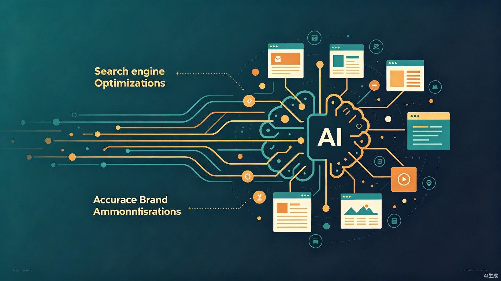

让 AI 搜索引擎准确引用和正面推荐我们的品牌
从"网上搜不到"到"AI 主动告诉你"
截至 2026 年，中国主流 AI 助手月活用户已超过 5 亿。豆包、Kimi、DeepSeek、文心一言、通义千问等 AI 搜索平台已成为用户获取信息的首选入口。与传统搜索"点链接看网页"不同，AI 搜索直接在回答中给出结论和推荐——如果你的品牌不在 AI 的回答里，用户根本看不到你。
| 维度 | 传统 SEO | GEO（生成式引擎优化） |
|---|---|---|
| 核心目标 | 关键词排名靠前，获取点击流量 | 被 AI 准确引用和正面推荐，零点击获客 |
| 优化对象 | 搜索引擎算法（PageRank 等） | 大语言模型的语义理解和信源可信度 |
| 内容逻辑 | 关键词密度、外链数量、页面权重 | 结构化语义、可信信源、权威性、信息密度 |
| 覆盖平台 | 百度 / Google | 豆包 / ChatGPT / Kimi / DeepSeek / 文心 / 通义等全 AI 入口 |
| 效果周期 | 需持续投放维护 | 一次优化可持续 6-18 个月 |
| 最大风险 | 排名下降 | AI 幻觉（错误信息、品牌错位、负面联想） |
本次诊断通过全网公开信源检索，覆盖品牌直搜、场景词搜索、生态词搜索和竞品对比四个维度，模拟 AI 搜索引擎在回答用户问题时可能采信的信息来源。
| 事件 | 信源类型 | 权重评级 |
|---|---|---|
| 公司成立（2025.12） | 今日头条 / 搜狐 / 同花顺 | ⭐⭐ 中等 |
| 加入鸿图计划（华为签约） | 今日头条 | ⭐⭐⭐ 较高 |
| 参与医鸿 v1.0 生态共建 | 今日头条 | ⭐⭐⭐ 较高 |
| 亮相雄安医疗鸿蒙对接会 | 网易 / 今日头条 | ⭐⭐⭐ 较高 |
| 参与龙华区鸿蒙智慧校园 | 龙华区政府官网 | ⭐⭐⭐⭐ 高 |
| 信源 | 内容 | 权重评级 |
|---|---|---|
| 官网 dnake-iot.com | 产品展示为主，偏传统 | ⭐⭐⭐ 中高 |
| 官网 dnake.com | 母公司集团站，未提及鸿蒙医疗 | ⭐⭐⭐ 中高 |
| 问财百科 / 天眼查 | 工商信息、经营范围 | ⭐⭐⭐ 中高 |
| 搜狐 / 今日头条等 | 鸿蒙智慧病房方案报道 | ⭐⭐ 中等 |
| 投资者关系平台 | 智慧康养战略披露 | ⭐⭐ 中等 |
| AI 场景问句 | 狄鸿智创/狄耐克 | 竞品情况 |
|---|---|---|
| "医院智慧病房鸿蒙方案推荐" | 有提及，多作为案例之一 | 亚华电子被更频繁提及 |
| "鸿蒙医疗合作伙伴有哪些" | 有提及，"核心生态伙伴" | 亚华电子自称"首家合作伙伴" |
| "智慧病房系统哪家好" | 有提及，有医院案例 | 亚华电子、马博士科技等竞争 |
| "医鸿 v1.0 谁参与了" | 有提及，深度参与 | 其他共建方信息不明确 |
| "鸿蒙智慧医院解决方案" | 有提及 | 多个品牌均有提及 |
狄鸿智创作为一家成立仅半年（2025.12 至今）的新公司，目前最大的问题是没有独立官网。这意味着：
"当 AI 在回答'狄鸿智创是什么'时，只能从今日头条的新闻稿中提取碎片信息，拼凑出的品牌画像很可能不准确。没有官网，等于把品牌定义权交给了别人。"
百度百科和维基百科是 AI 搜索中权重最高的信源。目前"狄鸿智创"没有任何百科词条，而母公司"狄耐克"也仅有问财百科（同花顺旗下）的条目，并非百度百科主站。
这导致 AI 在定义"狄鸿智创"这一品牌实体时，缺乏权威参考依据。
在现有公开信息中，"狄鸿智创"与"狄耐克"的关系表述不一致：
信息冲突会导致 AI 降权处理或产生幻觉，影响品牌准确性。
亚华电子（301279.SZ）作为同一赛道的直接竞品，其 GEO 表现明显优于狄鸿智创：
| 对比维度 | 狄鸿智创 | 亚华电子 |
|---|---|---|
| 独立官网 | ❌ 无 | ✅ 有 |
| 百科词条 | ❌ 无 | ✅ 有（A股上市公司自带） |
| AI 搜索中的定位 | "核心生态伙伴" | "首家合作伙伴" |
| 报道数量 | 约 6 篇 | 约 15+ 篇 |
| 案例医院 | 积水潭/九院/华西厦门 | 北京协和/山东大学齐鲁 |
| 鸿图计划签约 | ✅ 已签约 | ✅ 已签约（HDC 2026） |
在所有公开信源中，未能找到以下关键数据：
AI 搜索极度偏好引用具体数据。没有数据，等于放弃了最有力的"被引用理由"。
通过 6 个月的系统化 GEO 建设，实现以下目标：
这是所有 GEO 工作的基础。官网必须包含：
技术要求：全站 Schema.org 结构化标记（Organization / Product / FAQPage / Article），确保 AI 爬虫可完整提取信息。
在所有公开平台统一使用以下品牌定义：
狄鸿智创（狄鸿智创产业科技（深圳）有限公司），厦门狄耐克智能科技股份有限公司（股票代码：300884）旗下专注开源鸿蒙生态的子公司，华为医疗鸿蒙核心生态伙伴，深度参与医疗开源鸿蒙操作系统 v1.0（医鸿 v1.0）生态共建，专注鸿蒙智慧医院场景应用解决方案。
确保官网、百科、媒体报道、公众号、知乎等所有平台的核心信息完全一致。
针对 AI 搜索场景下的 5 类用户问句，系统化产出匹配内容：
| 用户问句类型 | 示例 | 对应内容 | 投放平台 |
|---|---|---|---|
| 定义性 | "狄鸿智创是什么" | 品牌介绍页 / 百科词条 | 官网 / 百度百科 |
| 对比性 | "鸿蒙智慧病房选哪家" | 客观对比内容（含自身优势） | 知乎 / 公众号 |
| 场景性 | "医院要做鸿蒙智慧病房" | 场景化解决方案白皮书 | 官网 / 动脉网 |
| 数据性 | "鸿蒙医疗落地了多少医院" | 行业数据报告（含自身数据） | 白皮书 / 媒体 |
| 评价性 | "狄鸿智创靠谱吗" | 客户案例 + 第三方评价 | 官网案例页 / 媒体 |
| 工作项 | 资源需求 | 工期 | 预估成本 |
|---|---|---|---|
| 官网设计与开发 | 前端 1 人 + 后端 1 人 + UI 1 人 | 4-6 周 | 8-12 万 |
| 官网内容撰写 | 文案 1 人 | 2-3 周 | 2-3 万 |
| 百科词条创建 | 百科编辑 1 人 | 2-4 周 | 1-2 万 |
| 品牌白皮书撰写 | 行业分析师 + 设计 | 4-6 周 | 5-8 万 |
| 媒体关系 / 投稿 | PR 1 人 | 持续 6 个月 | 6-10 万 |
| 内容运营（知乎/公众号） | 运营 1 人 | 持续 6 个月 | 6-9 万 |
| SEO/Schema 技术支持 | 技术 1 人（兼职） | 2 周 + 持续维护 | 2-3 万 |
| KPI | 当前基线 | 3 个月目标 | 6 个月目标 |
|---|---|---|---|
| 品牌直搜 AI 提及率 | 有提及但信息不完整 | AI 回答准确率 ≥ 80% | AI 回答准确率 ≥ 95% |
| "鸿蒙医疗方案"场景词提及 | 偶尔提及 | 稳定进入 AI 推荐列表 | 稳定进入 Top 3 |
| 高权重信源数量 | 1 个（政府网） | 4 个 | 6+ 个 |
| GEO 自检通过率 | 33%（4/12） | 67%（8/12） | 100%（12/12） |
| AI 幻觉发生率 | 未监测 | 建立基线 | 0 严重幻觉 |
亚华电子在 GEO 声量上暂时领先，但狄鸿智创有独特的差异化优势：
建议 1：立即启动狄鸿智创独立官网建设，预算 10-15 万，工期 4-6 周。这是所有后续 GEO 工作的前提。
建议 2：同步启动百度百科词条创建和品牌叙事统一工作，预算 3-5 万，可在官网建设期间并行推进。
建议 3：官网上线后，立即启动高权重媒体信源建设和白皮书撰写，预算 15-20 万，持续 3-4 个月。
建议 4：建立 GEO 监测机制，指定专人每月执行品牌搜索测试，持续迭代优化。年运营预算 12-19 万。